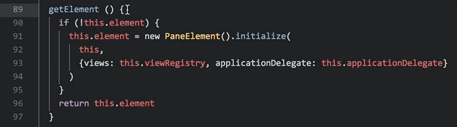

Atom 1.22
November 7, 2017 kuychaco
Tweet
Today’s release of Atom 1.22 includes a number of fixes to performance and usability.
Performance improvements
Users who work with large projects will be happy to see we resolved a long-standing performance issue related to spawning Git processes to fetch Git status. This manifested in periodic pauses of Atom’s UI and we’ve seen a noticeably smoother experience.
The autocomplete-plus default provider now computes suggestions natively and on a separate thread. This means no memory overhead and no threat to Atom’s responsiveness. Read more in our in-depth blog post on Atom’s new concurrency-friendly buffer implementation.
Usability enhancements
It’s now easier to find the bracket corresponding to the one under your cursor if you enable the new setting in the bracket-matcher package, which highlights the line number for the corresponding bracket:

To retain the sanity of those writing long markdown documents, the scroll position of the markdown preview no longer resets to the top when you save!
Language package updates
Finally, there has been another raft of improvements to many bundled language grammar packages. Block comment handling has been improved in CoffeeScript and YAML. A major regex performance improvement has been made in the JavaScript grammar package. The HTML package has a number of fixes for improved tag tokenization.
Don’t forget to check out all the other improvements shipping with this version in the release notes! 
Atom 1.23 Beta

Atom 1.23 is now available on the beta channel and includes a new feature for packages to register URI handlers, the ability to register hidden commands, as well as editor performance improvements.
URI Handling
Atom packages can now register a URI handler function that will be invoked any time the user visits a URI that starts with atom://package-name/. This feature is documented in our flight manual, so if you’re a package author, give it a try and let us know what you think!
CommandRegistry improvements
When registering commands via atom.commands.add, you now have the option to hide specific commands in the command palette. Here’s an example:
atom.commands.add('atom-workspace', {
'my-package:weird-command': {
didDispatch: () => { /* ... */ },
hideInCommandPalette: true
}
})
This example also demonstrates the fairly new ability to pass an object instead of a function as the command listener. Using this expanded system allows you to also specify a custom displayName and description for commands. Check out the API docs for CommandRegistry.add for details.
Improved compatibility with external Git tools
The GitHub package now never locks the index, making it easier to use the CLI or other Git tools with Atom open in the background. You should no longer see errors about index.lock when running a rebase or other operations in other tools.
Editor performance improvements
Atom has always provided a rich set of APIs that allow packages to respond to any type of change in the application. For example, Atom packages can track every text change that occurs in a particular text buffer using the TextBuffer.onDidChange method. Unfortunately, APIs like this one have made it easy for third-party Atom packages to accidentally introduce slowness in cases where many changes happen rapidly, such as when typing with multiple cursors.
In Atom 1.23 Beta, we’ve addressed this performance problem by changing the behavior of several of these APIs so that callbacks are never called more than once in a text buffer transaction. The transaction is a construct that Atom uses to group changes so that they can be undone and redone as a single operation. As always, in making this change, we have taken steps to ensure that existing packages will not be negatively affected. Code using the existing event APIs should continue to work. We have also notified the maintainers of every package using these APIs that their behavior will subtly change in this release.
There are many more details in the release notes.
Get all these improvements today by joining the Atom Beta Channel!